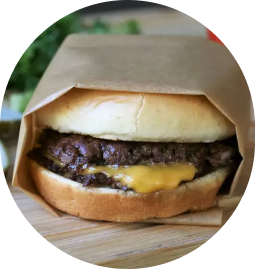

Homemade Smash Burgers
Description
This smash burger recipe makes super juicy burgers with crispy edges.
Ingredients
- 4 hamburger buns
- 2 tablespoons butter, softened, or as needed
- 1 pound ground chuck beef (80% lean)
- 4 6-inch squares parchment paper
- salt to taste
- 4 slices American cheese
- Burger toppings of choice
Steps
- Preheat an outdoor grill on high heat and lightly oil the grate.
- Place a cast iron flat-top griddle or large skillet on the grill and preheat until smoking.
- Spread butter inside the buns and toast them on the flat-top until lightly browned. Set aside.
- Divide the meat into 8 loosely-packed balls, 2 ounces each. Place on the hot flat-top and immediately smash down to 1/4 inch thickness using two crossed spatulas. Sprinkle with salt.
- Grill for about 45 seconds until edges are dark brown and centers are lightly pink. Flip the patties and cover 4 of them with cheese. Grill for an additional 15 to 20 seconds.
- Stack the plain patties over the cheese-covered ones to form 4 stacks. Place each stack in a bun and serve with your favorite toppings.